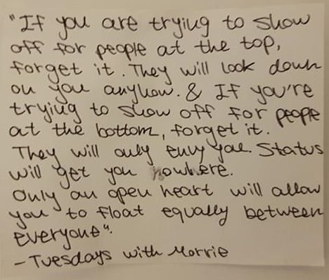
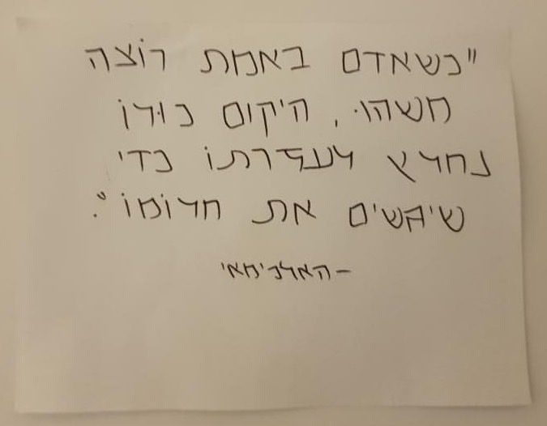
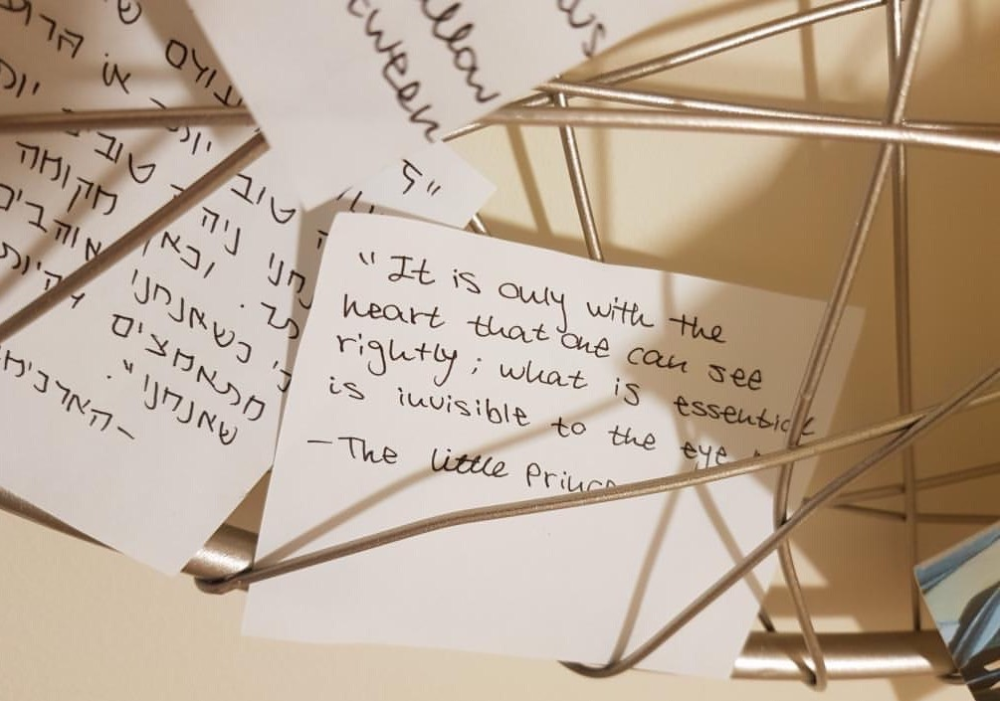

Quotes
Here are some quotes that I like :)
כל העולם כולו גשר צר מאוד והעקר לא לפחד כלל is one said by the Rabi Nachman of Breslov. It means, "The whole world in its entirety is a very narrow bridge, and the main thing is to not have fear at all." There's a really pretty tune that is associated with it and I really like the imagery of this one!
I have a dear friend named Shely who is as real as you can get and is also the most awesome emotionally aware individual :)She is also a big fan of quotes, so here are some of her favorite ones that she has hung up in her room back home.



😌